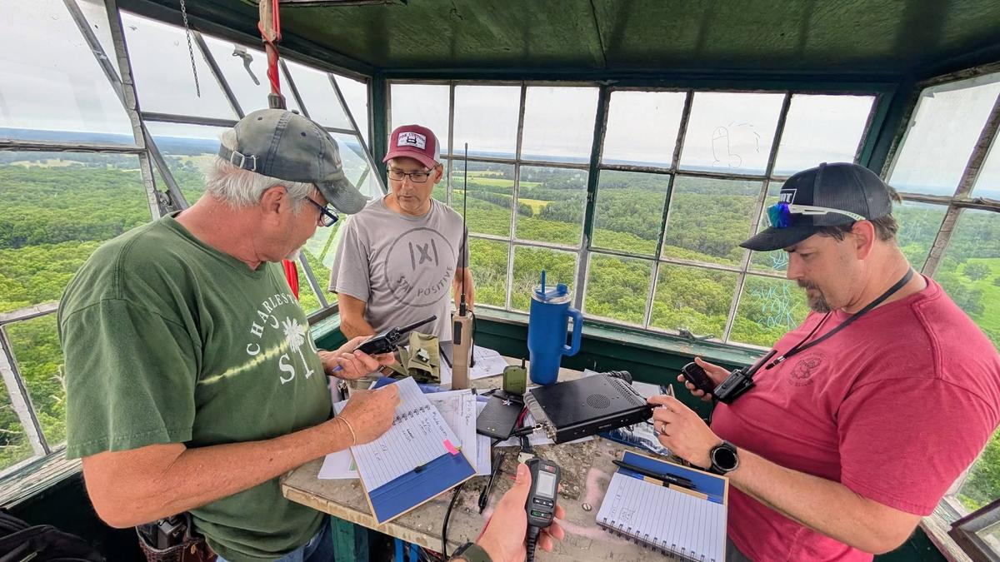

An incredible weekend operating emergency power, setting up temporary antennas, and making contacts! We had a great turnout this year, testing our deployment readiness and running digital and phone stations. Below are some of the highlight photos of our setups, the gear we ran, and the operations throughout the event.
